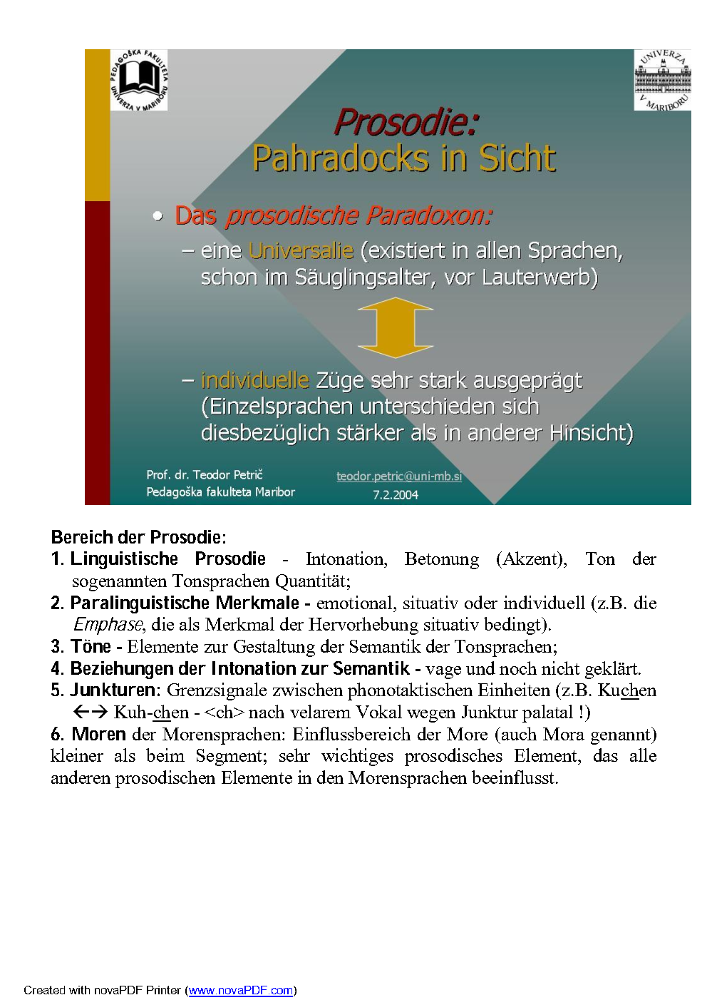
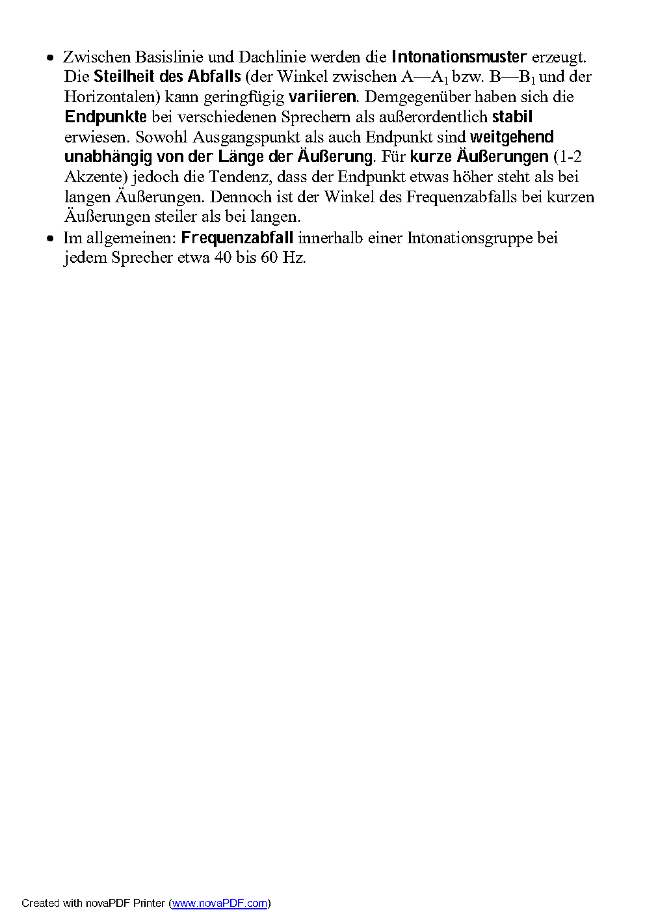
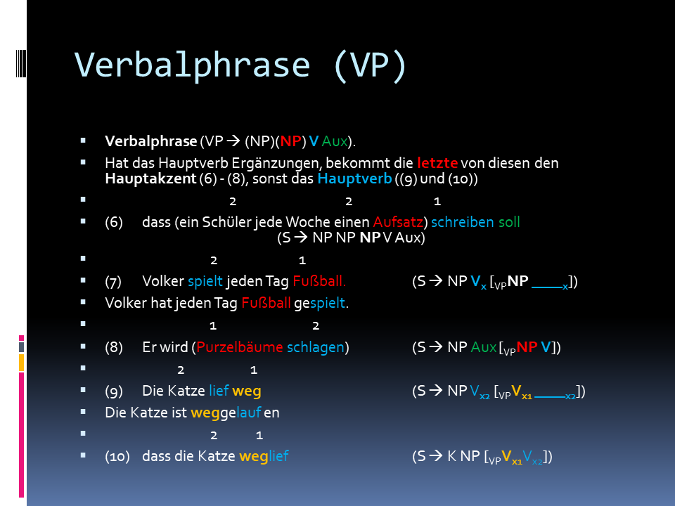

8 Prosodie
8.1 Terminologie
Der Inhalt der älteren Unterrichstsfolien Petrič (2004) beruht auf Neppert & Pétursson (1992: 133-174), eine Folie auf Rausch & Rausch (1993) und zwei Folien auf der Präsentation von Benno Peters https://www.isfas.uni-kiel.de/de/linguistik/studium-und-pruefung/Master/materialien-fuer-auswaertige/prosodie/Prosodie_Vorlesung_Grundlagen.pdf.

8.2 Intonation

8.3 Akzent
8.4 Emphase
8.5 Kontrastakzent vs. Emphase
8.6 Quantität
8.7 Paralinguistische prosodische Merkmale

8.8 Wortakzentuierung
Akzentregeln für zwei- und dreigliedrige Determinativkomposita mit substantivischen Bestandteilen gemäß T. Alan Hall(2011: 293-294):
Bei drei- und mehrgliedrigen Komposita (Zusammensetzungen) müssen wir den morphologischen Aufbau, aber auch semantische Gesichtspunkte berücksichtigen, um die komplexen Wörter entsprechend zu zerlegen.
Der Hauptakzent in (25) ist vorhersagbar: Er befindet sich auf der prominentesten Silbe im verzweigenden Bestandteil.
(25a) Haustür-schlüssel, Blumenkohl-suppe
(25b) Landes-arbeitsamt, Schienen-ersatzverkehr
Die Platzierung des Hauptakzents (25) ist mit den Akzentregeln in (26) vorhersagbar:
(26a) In einem Kompositum A+B, in dem weder A noch B verzweigt, ist Bestandteil A stark. (26b) In einem Kompositum A+B ist die Komponente B dann und nur dann stark, wenn B verzweigt.
Regel (26a): z.B. Bahnhof (weder A noch B verzweigen).
Regel (26b) z.B. dreigliedrigen Komposita in (25).
Akzentregel (26b) gewährleistet Hauptakzentuierung des zweite Bestandteils auch in solchen Komposita wie z.B. Atomwaffensperrvertrag, in denen beide Bestandteile verzweigen.
Diese Akzentregeln haben Ausnahmen (z.B. Zentral-flughafen).
8.9 Akzentuierung von Phrasen
